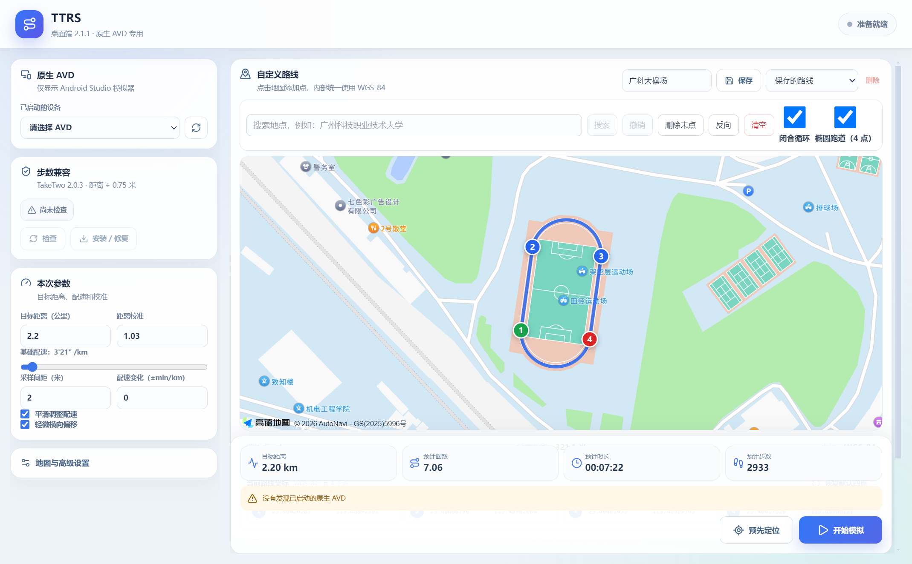

从第一次安装，
到每天直接打开。
TTRS 2.1.1 测试版中文使用教程。把初次环境配置做完，以后只需启动模拟器和软件。
原生 AVD 测试版不需要编写代码教程可离线阅读先确认你拿到的是什么
测试版请从固定的 v2.1.1 发布页下载 TTRS-2.1.1-Windows.zip；latest 入口属于正式渠道。
本包提供 Windows 可运行程序与使用文档。TTRS 的源码工程不随包提供。用户运行程序不需要安装 Node.js、npm、Java 开发工具或项目源码。
先解压整个发布包，再打开 软件\TTRS.exe。不要只复制 EXE，也不要直接在压缩软件里运行。
教程维护日期：2026-10-19。软件版本：2.1.1（测试版）。兼容性基线取自项目此前的 API 28 验证环境，当前未对所有新版系统镜像逐一复测。
01 / 电脑准备
| 项目 | 本教程的使用范围 |
|---|---|
| 电脑系统 | Windows 10 / 11，64 位，Intel 或 AMD x64 处理器。此包不是 macOS 或 Windows ARM 版。 |
| 内存与空间 | 按当前 Android Studio + Emulator 的官方要求准备：至少 16 GB 内存与 16 GB 可用空间；建议预留约 30 GB 磁盘空间，具体以当前官方要求为准。 |
| 虚拟化 | 处理器虚拟化需启用。任务管理器 → 性能 → CPU，检查“虚拟化：已启用”。 |
| 网络 | 首次下载 SDK 和系统镜像需要网络；高德底图、搜索及目标应用的联网功能也需要网络。 |
虚拟化没有启用时
- 按电脑厂商说明进入 BIOS / UEFI，启用 Intel VT-x、Virtualization Technology 或 AMD SVM / AMD-V。
- 在 Windows 搜索“启用或关闭 Windows 功能”，启用 Windows 虚拟机监控程序平台（Windows Hypervisor Platform），然后重启。
- 再次检查任务管理器和模拟器是否可启动。
当前 Android 官方推荐 Windows 使用 WHPX。不要照过时教程把 HAXM 当作必装项；也无需为了运行本软件而盲目关闭系统安全功能。参见官方硬件加速说明。
02 / 安装 Android Studio 与 SDK
- 打开 Android Studio 官方下载页，下载 Windows 安装程序并按向导安装。只用于运行模拟器时，不用新建 Android 开发项目。
- 完成首次设置向导。建议把 Android SDK 放在默认位置
%LOCALAPPDATA%\Android\Sdk，TTRS 会自动查找它。 - 在欢迎界面选择 More Actions → SDK Manager。已打开项目时使用 Tools → SDK Manager。
- 在 SDK Tools 中勾选并安装 Android SDK Platform-Tools 与 Android Emulator。本教程不需要 NDK、CMake 或 Android 源码。
- 在 SDK Platforms 勾选 Show Package Details，找到 Android 9.0 (Pie) / API 28。
- 选择 Google APIs Intel x86_64 Atom System Image。不要选 Android TV、Wear OS，也不要把 Android SDK Platform 28 本身当作系统镜像。
- 点击 Apply / OK，按需接受官方许可，等待所有下载完成。
如果 SDK 装在其他盘，记下 SDK Manager 顶部的 Android SDK Location。设备找不到时按“找不到 adb”处理。
03 / 创建原生 AVD
AVD 可以理解成电脑里的“一台虚拟安卓手机”。先按已验证配置创建一台，再启动它。
- 欢迎界面选择 More Actions → Virtual Device Manager；已有项目时使用 View → Tool Windows → Device Manager。
- 点击 + / Create Virtual Device / Create Device，选择手机类型的 Pixel 3 硬件配置。
- 选择 Android 9 / API 28 + Google APIs + x86_64。如果列表被筛选，调整 API 和 Services 筛选；不要因为顶部默认推荐更新的 API 就直接选最新版。
- 设备名设置为
TTRS_API28；其余选项按下面的表配置。 - 点击 Finish，回到设备列表点击 ▶。首次开机可能较慢，等到安卓桌面能正常点击再继续。
| 设置项 | 建议值 |
|---|---|
| Hardware / 机型 | Pixel 3。项目原验证配置使用此 profile；若 API28 不可选，先检查机型的最低 API 限制。 |
| API / Services / ABI | 28 / Google APIs / x86_64；不要选 ARM64 镜像来解决 ARM 应用兼容。 |
| CPU / RAM | CPU 2–4 核，RAM 2–4 GB；根据宿主电脑资源分配。 |
| Graphics | Automatic。遇到模拟器自身黑屏或花屏，再尝试 Software，并冷启动。 |
| Internal storage | 约 8–10 GB。 |
| VM heap / 启动 | VM heap 256 MB；默认 Quick Boot，可用 Cold Boot 排查异常。 |
| 网络与方向 | Speed：Full；Latency：None；Orientation：Portrait。 |
| 相机 / 扩展存储 | 保持默认；本流程不依赖相机，不要求额外 SD 卡。 |
已核对的历史环境为 Pixel 3、Google APIs x86_64、API 28、镜像 revision 11。菜单能创建同 API 的新 revision，不代表已完成相同兼容性验证。若官方已不提供该镜像，请反馈，不要从不明来源获取修改镜像。
模拟器默认定位可能在美国。这不会由手机语言或时区自动修正；后面通过 TTRS 的“预先定位”把位置设到路线起点。不要在一次测试中同时播放 AVD 内置路线和 TTRS 路线。
04 / 打开 TTRS，连接模拟器
- 把发布包完整解压到固定目录，例如
D:\TTRS，打开软件\TTRS.exe。 - 确认刚才创建的 AVD 仍在运行。点击 TTRS 左侧“原生 AVD”旁的刷新按钮，并在“已启动的设备”中选中它。首次建议只开一台；下拉框显示类似
Pixel 3 · emulator-5554的机型和设备编号，不一定显示你起的 AVD 名称。 - 点击“步数兼容”区域的 检查，查看目标应用的安装状态。
- 需要当前兼容 APK 时，点击 安装 / 修复。程序会检查自带文件并尝试覆盖安装，不会自动卸载应用。
- 安装完成后再次检查，确认显示 步数兼容版 v2 已就绪。在 AVD 中打开应用，自行完成必要的登录和定位授权。
也可独立下载TakeTwo 2.0.3 步数兼容补丁 APK，再拖入 AVD 安装。附件 app-taketwo2.0.3-stepfix-v2-signed.apk 是 step-fallback-v2 补丁版，不是未经修改的原版；APK 的 2.0.3 与 TTRS 的 2.1.1 是两个软件的版本号。安装时同样需要注意签名冲突与本地数据。
第三方 APK 的权利和使用条件独立适用；本教程不替代第三方应用的许可或账号规则。
05 / 配置高德地图
桌面软件里的地图需要高德 Web 端（JS API）Key 和与它配对的 securityJsCode 安全密钥。这与安卓应用自己的地图配置是两件事。
- 登录 高德开放平台控制台，按平台要求完成开发者注册或认证。
- 进入 应用管理 → 我的应用，创建一个应用，然后添加 Key。
- 服务平台选择 Web 端（JS API）。不要选“Web 服务”或“Android 平台”。
- 复制同一条 Key 对应的 Key 与安全密钥。具体配额、开通条件与费用以高德控制台为准。
- 打开 TTRS 左侧 地图与高级设置，填入“高德 Web Key”和“高德安全密钥”。
- 点击 应用并重新加载地图，等待底图出现道路与建筑。地图 Logo 和蓝色路线出现，并不单独代表底图成功。
以后修改 Key 时仍需点一次“应用”。用户自己的密钥保存在本机配置中，请不要把填好密钥的用户配置目录或未遮挡的设置截图发给其他人。
INVALID_USER_DOMAIN，可能是高德绑定域名规则与本地桌面页面不匹配，应按控制台规则处理，软件不会代为规避鉴权。06 / 选路线，设参数

- 内置操场：点击“恢复默认四点”可恢复四个固定点。启用“闭合循环”和“椭圆跑道（4 点）”才能按四个控制点生成操场曲线。
- 自定义路线：先“清空”默认四点，再搜索自己的地点，然后点击地图按顺序添加点。搜索只移动地图，不会自动替换原路线；未清空就跨地区加点，会产生很长的连线。拖动标记可调整位置。
- 普通路线：按选点顺序连线；不希望走操场曲线时取消“椭圆跑道”。
- 保存：填写路线名并点“保存”，下次从“保存的路线”列表选择。路线保存在本机；删除已保存路线会移除该条记录。
| 参数 | 含义与初次使用建议 |
|---|---|
| 目标距离 | 希望目标应用最终记录的距离；实际结果以目标应用为准。 |
| 基础配速 | 分钟 / 公里。可先保持熟悉的测试值，不必追求越快越好。 |
| 距离校准 | 默认 1.03，用于补偿发送轨迹和目标应用统计的偏差；这个值不是任何环境下都精准的保证。 |
| 采样间距 | 默认 2 米；初次使用保持默认即可。 |
| 平滑配速 / 横向偏移 | 可按测试需要切换；不承担规避检测或保证有效记录的作用。 |
TTRS 会自动处理地图显示与模拟器定位的坐标转换；界面里的路线坐标统一标为 WGS-84。本版不提供手工坐标输入界面。
07 / 配置完成后的日常流程
- 启动 AVD。等 Android 桌面完全出现，保持模拟器运行。
- 启动 TTRS。刷新并选择对应 AVD，确认兼容状态和保存的路线。
- 点击“预先定位”。让模拟器到路线起点；在目标应用中核对当前位置，定位不对时先处理，不要直接开始。
- 在目标应用里开始本次测试，再在 TTRS 点击“开始模拟”。运行中保持 AVD 与 TTRS 正常工作，避免电脑休眠。
- 需要中断时，按用途选择。“暂停”保留当前进度，“继续”接着运行；“停止”结束本次发送并清空 TTRS 的实时进度面板。
- 在目标应用内处理结果。TTRS 的按钮只控制坐标发送，不会自动替目标应用完成暂停、结束或保存。是否可保存取决于目标应用实际规则。
不必每天重新安装 Android Studio、重新创建 AVD 或重新填地图密钥。正常退出后，下次继续使用同一个模拟器和本机配置。
08 / 给日常使用做两个快捷方式
首次设置完成后，可以直接打开 AVD，不必每天进入 Android Studio 的设备列表。
快捷方式一：启动 AVD
- 在桌面右键 → 新建 → 快捷方式。
- 项目位置填写下方内容。示例假设 SDK 在默认目录、AVD 名称为
TTRS_API28：
"%LOCALAPPDATA%\Android\Sdk\emulator\emulator.exe" -avd TTRS_API28命名为“启动 TTRS 模拟器”。SDK 安装在其他盘时，换成 SDK Manager 显示的实际目录；AVD 名称不同也要替换。这个快捷方式使用本机已安装的官方模拟器，不会下载或创建新设备。
快捷方式二：打开 TTRS
在“软件”文件夹右键 TTRS.exe → 显示更多选项 → 发送到 → 桌面快捷方式。以后先点“启动 TTRS 模拟器”，等安卓桌面，再点 TTRS。
快捷方式依赖文件的原路径；移动 SDK 或软件目录后要更新它。直接独立启动的 AVD 不需要持续打开 Android Studio IDE，但模拟器进程本身必须保留。
09 / 常见问题
提示“没有找到 adb”
打开 SDK Manager，确认 Android SDK Platform-Tools 已装。默认目录应存在 %LOCALAPPDATA%\Android\Sdk\platform-tools\adb.exe。
SDK 不在默认路径时，在 Windows“编辑账户的环境变量”中新建或更新用户变量 ANDROID_HOME，值填 SDK 根目录，例如 D:\Android\Sdk；不要填到 adb.exe 或 emulator 目录。完全退出再打开 TTRS。若已有 ANDROID_SDK_ROOT，两者不要指向不同的 SDK。
设备列表为空，或 AVD 已开却找不到
先确认使用 Android Studio 原生 AVD，并已进入 Android 桌面，而非只有创建配置。然后刷新 TTRS。2.1.1 不支持雷电、Genymotion 或真机连接。
仍为空时，确认 TTRS 与 Android Studio 使用同一个 Windows 用户和 SDK。可以用“更多操作 → Cold Boot Now”冷启动后重试。不要先点 Wipe Data；它会清掉模拟器数据。
API 28 镜像看不到，或机型不允许 API 28
SDK Manager → SDK Platforms → Show Package Details 中展开 Android 9 / API 28；设备创建页检查 API、Services 与隐藏/不支持镜像筛选。选手机 Pixel 3，避免使用最低 API 要求更高的机型。若官方已无法下载，不要换来路不明的镜像，反馈你当前 Android Studio 版本和可用镜像列表。
模拟器无法启动、很卡或黑屏
核对虚拟化和 Windows Hypervisor Platform；开启后通常需重启 Windows。先关闭其他高占用程序，仅运行一台 AVD。尝试 Cold Boot，图形异常时再切换 Graphics 为 Software。不要把 Wipe Data 当作日常操作。
安装提示 NO_MATCHING_ABIS 或没有匹配的 ABI
说明 APK 原生库与镜像架构不匹配。当前教程匹配 Google APIs x86_64 API28 与指定 2.0.3 兼容 APK；换了别的 APK 需单独验证。不要直接下载不明 ARM 转译包。
安装提示签名冲突
原版与兼容版的签名可能不同。先处理需要保留的数据，再决定是否在 AVD 手动卸载旧版并重新安装。软件不会自动卸载；卸载将清除该应用的本地数据。
高德只有 Logo 和路线，没有道路与建筑
先确认运行的是 2.1.1。打开地图与高级设置，填入同一条 Web 端（JS API）Key 的 Key 和安全密钥，再点“应用并重新加载地图”。加载地图依赖网络，换组 Key 不能代替排查网络。
INVALID_USER_KEY：检查 Key；INVALID_USER_SCODE：检查安全码配对；INVALID_USER_DOMAIN：检查域名规则；USERKEY_PLAT_NOMATCH：检查是否误申请成其他平台。参见高德官方错误码。
位置在美国，或地图上的点和目标应用位置不一致
先确认选中了正确 AVD，再点 TTRS“预先定位”，等待目标应用取得新定位。语言、时区、地图显示中心不能代替发送 GPS。停止 AVD Extended Controls 中另一路位置/路线播放，检查 Android 定位权限是否开启。
提示找不到 AVD Console 鉴权文件
使用同一 Windows 用户正常启动原生 AVD；官方模拟器会管理本机 Console 认证文件。完全退出并重新启动 AVD 后重试。不要把个人认证 token 分享给他人，也不要通过关闭认证来解决。
只复制 TTRS.exe 后打不开
重新完整解压发布包，保留 DLL、resources、locales 和许可证等全部文件。只创建指向 EXE 的桌面快捷方式，不要把 EXE 单独移出去。系统拦截或报毒时，先核对发布来源及校验值，再反馈具体提示；不要直接关闭安全软件。
程序已经停止，为什么目标应用还在计时？
两个软件的状态独立。“停止”只停止 TTRS 发送坐标；还需要在目标应用中手动暂停或结束。TTRS 显示的是本机发送进度和估算统计，不能替代目标应用的最终记录。
如何更新？会丢掉路线吗？
先完全退出旧 TTRS，把新包解压到新目录，再启动。现有 2.1.x 通常会继续使用同一 Windows 用户下的应用配置；不要手动删除 AppData 配置目录。更换电脑或账户不等于迁移路线，本版没有界面化导入导出功能。
向发布者反馈时需要提供什么？
提供 TTRS 版本、Windows 版本、Android Studio / Emulator 版本、AVD 的 Android API / Services / ABI，以及错误文字和遮挡隐私后的截图。请勿提供登录密码、高德完整 Key、安全密钥或 Console token。
官方文档与适用范围
本文根据 TTRS 2.1.1 现有界面、发布资源与项目验证记录编写；Android Studio 和高德的配置指引已于 2026-10-19 核对官方文档。下载入口、页面名称和服务规则可能随版本变化。
本程序用于有权开展的开发与兼容性测试，使用时遵守相关应用、服务及机构规则。第三方 APK、SDK、地图服务和各开源组件的条款独立适用；参见同目录的“分发说明.txt”。